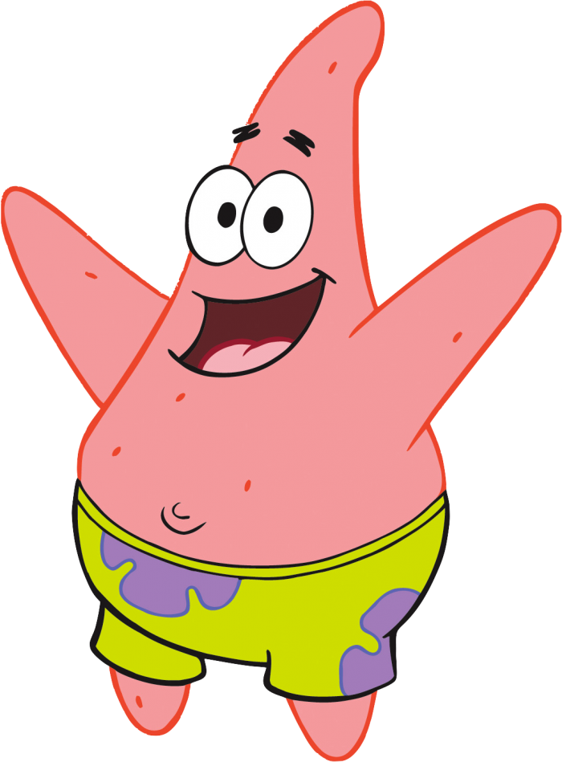
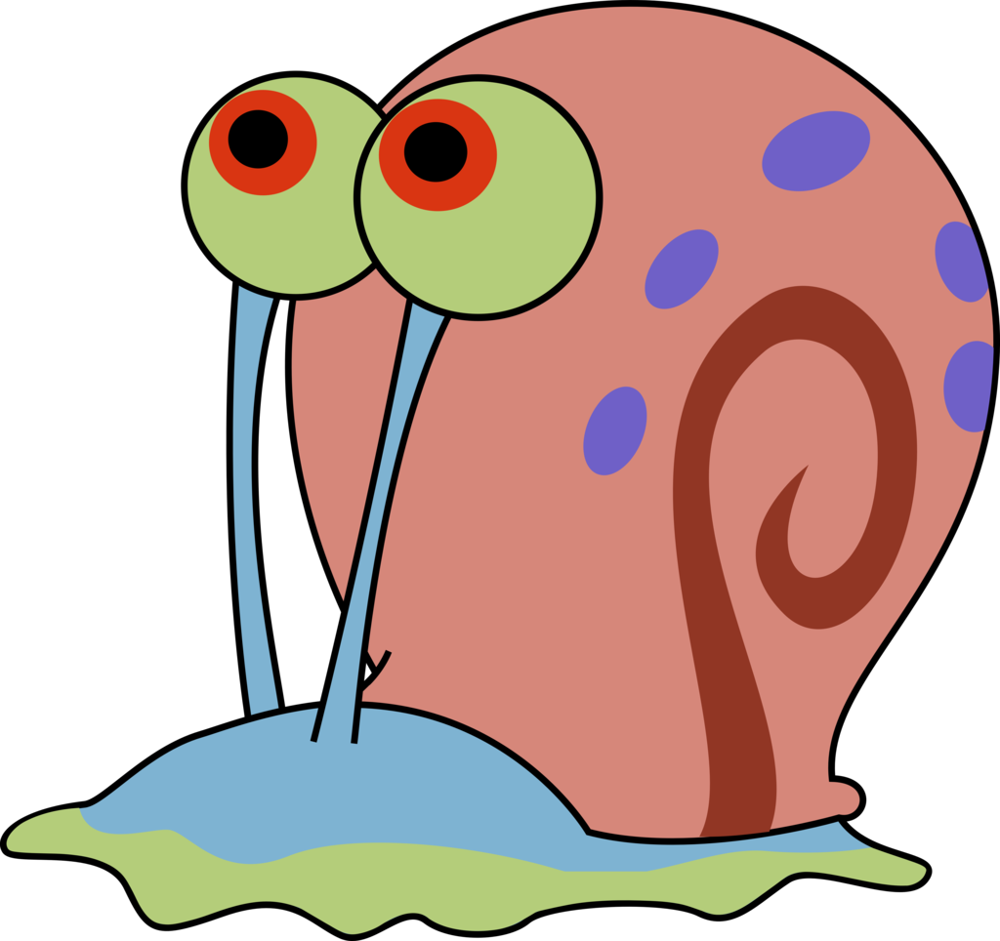

Scratch 作品:
一、動畫主題-迷宮遊戲
迷宮遊戲網址
迷宮遊戲-開始畫面 :
迷宮遊戲-進行中畫面 :
腳色說明:
1.玩家 Sponge Bob : 可透過上、下、左、右鍵操控，在迷宮地圖上進行移動。
2.解說員 Sandy : 當玩家觸發事件時，會透過撥放語音和顯示文字進行相對應的說明。
3.關主 Patrick : 當玩家抵達迷宮終點，並遇見關主時，遊戲結束。

4.海洋生物 : 當玩家觸碰到海洋生物時，血量 -10，海洋生物會自行在迷宮中移動，當血量歸零時，則重新開始遊戲。


5.硬幣 : 採用分身實作，每個硬幣的轉速為隨機，當玩家觸碰到硬幣時，血量 +10，硬幣會隨時間轉動。
6.氣泡 : 採用分身實作，透過函數模擬氣泡上浮的狀況

二、Google小恐龍遊戲
迷宮遊戲-開始畫面 :
迷宮遊戲-結束畫面 :
回上一頁 回到頁首